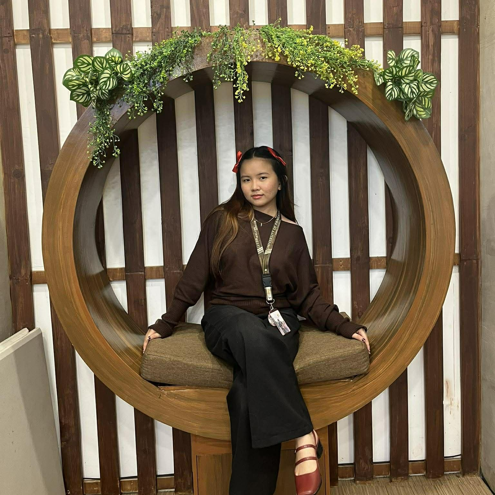

AQUERRA P. FERRERA
Undergraduate in Mechanical Engineering
San Carlos City, Pangasinan
+63 888 888 8888
aquerra.ugc@gmail.com
Carrer Objective
- As a dependable, motivated, and detail-oriented undergraduate in Mechanical Engineering. Seeking a challenging opportunity to grow professionally and contribute to the success of the team. With a strong work ethic, excellent communication skills, and a calm, solution-oriented mindset, confident in handling demanding situations and delivering high-quality service. Eager to learn, quick to adapt, and committed to providing consistent and reliable support in dynamic, fast-paced environments.
Skills
- HTML, CSS, Microsoft, Excel
- Basic Web Development
- Adaptability
- High Patience
- Team Collaboration
- Effective Communication Skill
- Fast Learner
Experience
Self-Employed I Handcrafted Business - Owner
- Created and sold handcrafted items through social media platforms, managing end-to-end operations.
- Developed organizational, communication, and problem-solving skills through independent business management.
- Handled customer inquiries, orders, and after-sales support, ensuring a positive customer experience.
On-the-job Training (OJT) - City Engineering Office
- Observe day-to-day operations and applied learning under the guidance of an engineer.
- Assisted in coordinating with workers and staff regarding project tasks and site activities.
- Strengthened communication, social skills, and teamwork by interacting with workers and supervisors.
Sales Assistant
- Sold fresh vegetables and assisted daily customers at a local market stall
- Managed cash payments and basic bookkeeping
- Helped with inventory and restocking of vegetables
Education
Doyong National High School - PRIMARY 2012-2018
Gospel of Christ School of San Carlos, Inc. - SECONDARY AUGUST 2018 - JULY 2024
Science, Technology, Engineering and Mathematics (STEM)
PHINMA University of Pangasinan - Undergraduate in Bachelor of Science in Mechanical Engineering - TERTIARY AUGUST 2024 - APRIL 202
Other
Hobbies
About me